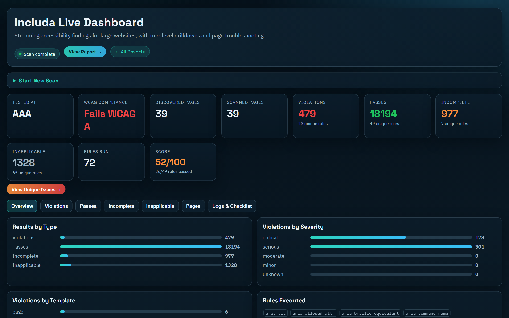
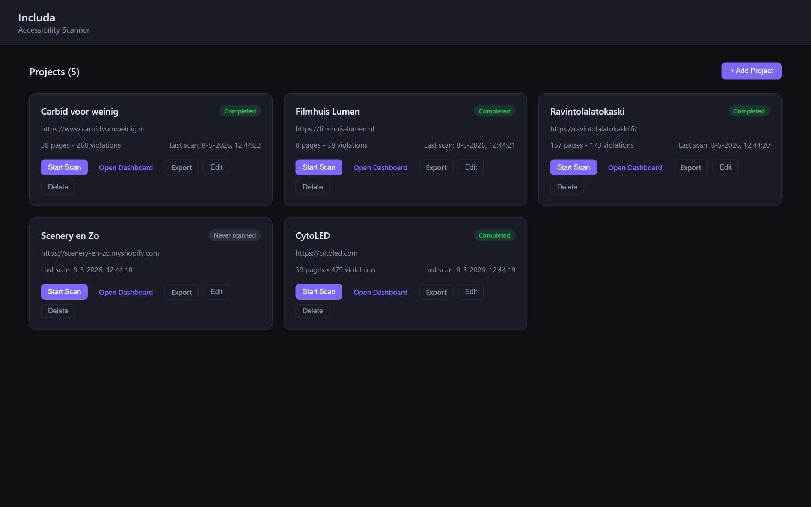
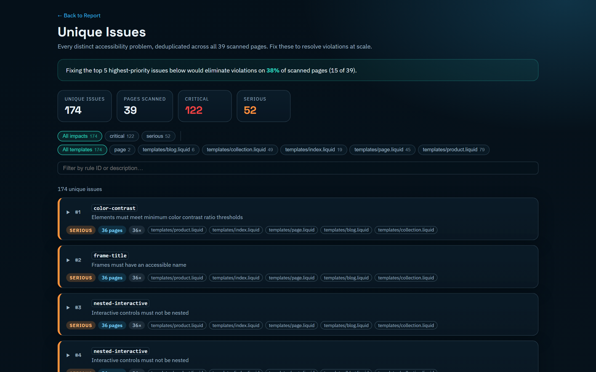
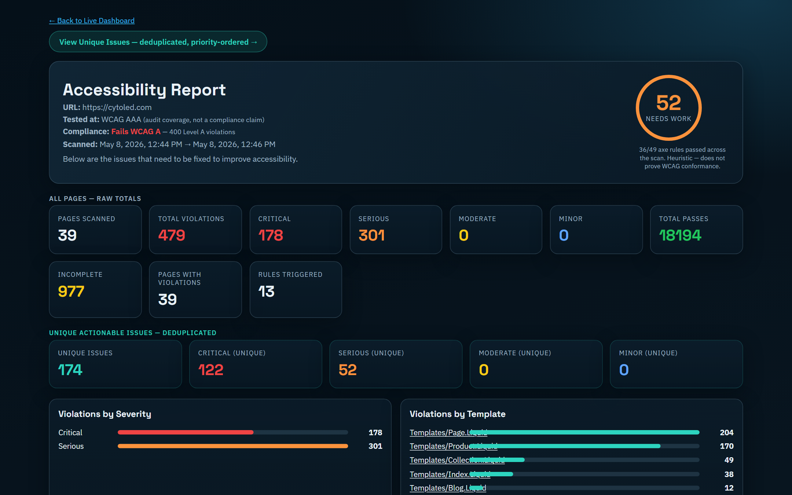

Whole-site crawl
Discovers URLs from sitemap.xml, sitemap indexes, robots.txt, and link traversal. Sample N pages per template instead of every URL on huge sites.
Includa crawls every page of your website, runs WCAG 2.0/2.1/2.2 audits with axe-core, deduplicates issues across templates, and hands you AI-ready fix prompts you can paste straight into Claude or ChatGPT.

Most a11y tools test one URL at a time. Includa scans hundreds of pages, finds the patterns, and tells you what to fix once instead of hundreds of times.
Discovers URLs from sitemap.xml, sitemap indexes, robots.txt, and link traversal. Sample N pages per template instead of every URL on huge sites.
Covers Levels A, AA, and AAA via axe-core, with a clear binary compliance result — not a misleading score. Lighthouse-style 0-100 quality score for trends.
Same broken pattern on 200 pages? It collapses into one issue with the affected page count. No more wading through 1,200 violations to find the 8 root causes.
Detects WordPress (Block + Classic themes), Shopify (incl. PageFly), Drupal, Magento 2, Squarespace, HubSpot, Ghost — and tailors fix prompts to each platform's editing model.
Every unique issue ships with a copy-pasteable prompt — full context, selectors, screenshots, CMS hints. Hand it to Claude or ChatGPT and get a real fix back.
Watch progress as it scans, drill into any rule or template, then export a self-contained static HTML site you can host on Netlify, Vercel, or send to a client.
Live dashboard while it's running, deduplicated issues for fixing, deep static report for sharing with stakeholders.
Add a site, hit "Start Scan," and watch progress in real time. Run multiple scans concurrently. Stop and resume long crawls. Export any project to a self-contained static report you can share with stakeholders.

The Unique Issues view collapses all variations of the same broken pattern into a single entry, sorted by severity and reach. Filter by impact level or template. Each issue ships with a ready-made prompt for an AI assistant.

A standalone HTML report with the score, compliance status, severity breakdown, and links to per-page, per-rule, and per-template drilldowns. No server, no database — just open the HTML in any browser.

Double-click and go. The scanner downloads its browser engine on first run.
.exe (NSIS), .msi, or portable .exe
x64 and arm64 builds
chmod +x, then run
First-launch note: the binaries are not yet code-signed. Windows SmartScreen will warn — click "More info → Run anyway." macOS Gatekeeper will block — right-click → Open the first time.
Same engine, no GUI. Drop it into CI to fail builds on critical regressions.
# clone and install $ git clone https://github.com/anomalyco/includa.git $ cd includa && npm install # scan a single site $ node bin/includa.js https://example.com # start the multi-project dashboard server $ node bin/includa.js --dashboard --port 4175 # gate CI on critical issues $ node bin/includa.js https://example.com --fail-on-critical